Alterando o conteúdo dos elementos HTML
1. element.textContent
O atributo textContent nos permite obter o texto contido dentro do
elemento. Mesmo que haja outras tags dentro dele, o textContent irá
retornar todo o conteúdo de texto contido em todas as tags filhas. No
entanto, assim como podemos visualizar o texto, podemos também alterá-lo;
para isso, basta fazer uma atribuição.
Isto é um exemplo
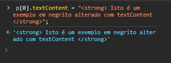
Você pode se perguntar: “Mas e se eu quiser adicionar uma parte do texto
em negrito?”. Bom, nesse caso, adicionar uma tag strong, como mostra o
código a seguir, não vai trazer esse resultado, porque ela vai ser
renderizada como texto.
2. element.innerHTML
O innerHTML retorna o conteúdo HTML contido dentro do elemento. Da mesma
forma que vimos para o textContent, também podemos atribuir um novo valor
para o innerHTML, porém, nesse caso, o valor pode ser um conjunto de tags
HTML no formato de string.
Isto é meu segundo paragráfo
Uso do innerHTML:
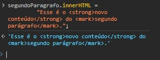
Texto alterado:
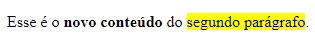
3. element.value
Para finalizar, é importante mencionarmos o atributo value. Ele só existe
dentro de elementos input e pode ser utilizado para obter ou definir o
conteúdo da propriedade value do input.
Adicionando elementos na página web
Para adicionar elementos no HTML por meio do JavaScript, existem vários
métodos. Seria possível, inclusive, utilizar o atributo próprio atributo
innerHTML que já vimos anteriormente. Consegue imaginar como faríamos
isso? Bastaria incrementar nesse atributo o conteúdo que desejamos, como
ilustra o exemplo do código abaixo:
elemento.innerHTML = elemento.innerHTML +` "div" Essa div será adicionada
logo após o conteúdo que já existe no "elemento". "div" `;
A partir do código acima, vemos que estamos concatenando uma div com o
conteúdo que já existia dentro do elemento (que pode ser qualquer elemento
que você tenha selecionado com o querySelector, por exemplo).
Quadrado1
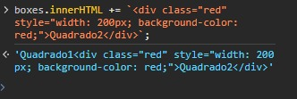
A partir do código acima, vemos que estamos concatenando uma div com o
conteúdo que já existia dentro do elemento (que pode ser qualquer elemento
que você tenha selecionado com o querySelector, por exemplo). Porém, como
dito anteriormente, existem vários métodos que servem para adicionar
elementos. Veremos os principais deles e, inclusive, teremos a
oportunidade de combiná-los com outros recursos que vimos anteriormente.
1. createElement / appenChild:
Esse método recebe o nome da tag que se deseja criar como parâmetro. Uma
vez criada, a tag ainda não tem conteúdo. Porém, para adicionar um
conteúdo podemos utilizar o textContent ou o innerHTML que já vimos
anteriormente.
- Aprender DOM
- Entender o querySelector
- Utilizar o innerHTML
- appenChild
Para inserir outro item (elemento li) dentro da lista, podemos utilizar um
primeiro método: appendChild. Considerando que se tenha um elemento criado
com o createElement, por exemplo, podemos utilizar o método appendChild
para inserir esse elemento dentro da nossa lista (ao final dela). O
appendChild deve ser chamado a partir do elemento da lista (ul), conforme
exemplifica o código a seguir, uma vez que desejamos adicionar mais um
item nesse elemento ul:
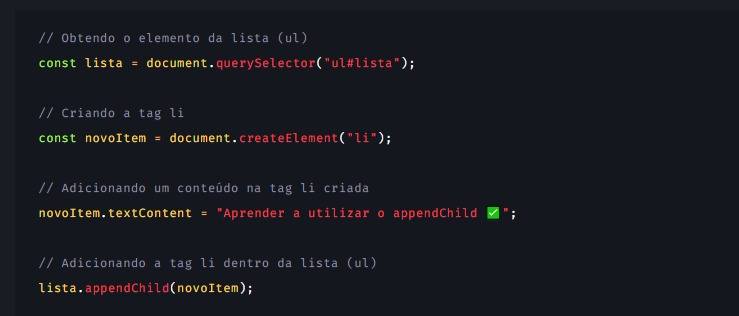
Assim: Temos o seguite resultado:
.jpeg) 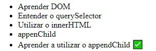
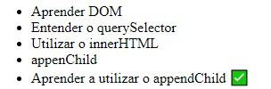
2. createElement / insertBefore:
Iremos chamar o método insertBefore a partir do elemento da lista, afinal,
queremos adicionar um novo elemento dentro dela. Esse método recebe dois
parâmetros: o elemento que você deseja adicionar (que pode ter sido criado
com o createElement) e o elemento filho acima do qual você deseja
adicionar o novo elemento.
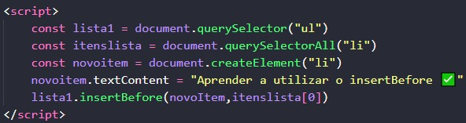
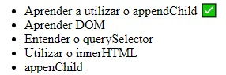
Existe ainda o método insertAdjacentHTML
3. removeChild:
Para finalizar esse tópico, veremos como remover um elemento da página,
utilizando o método removeChild. Como o próprio nome sugere, ele remove um
filho do elemento.
- Ir
- ao
- Mercado
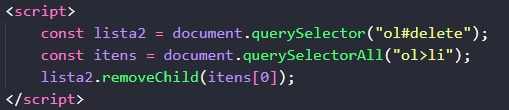
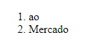
ou
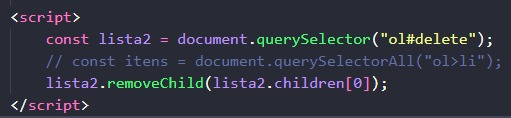